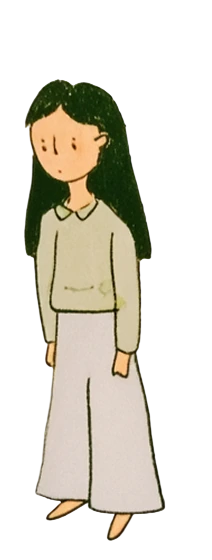
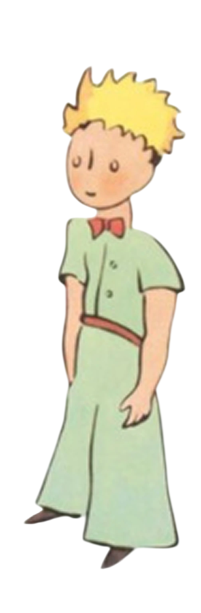
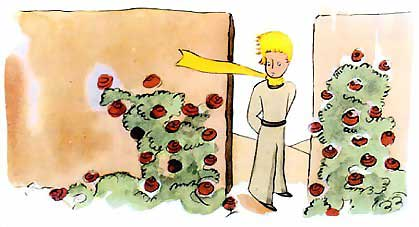
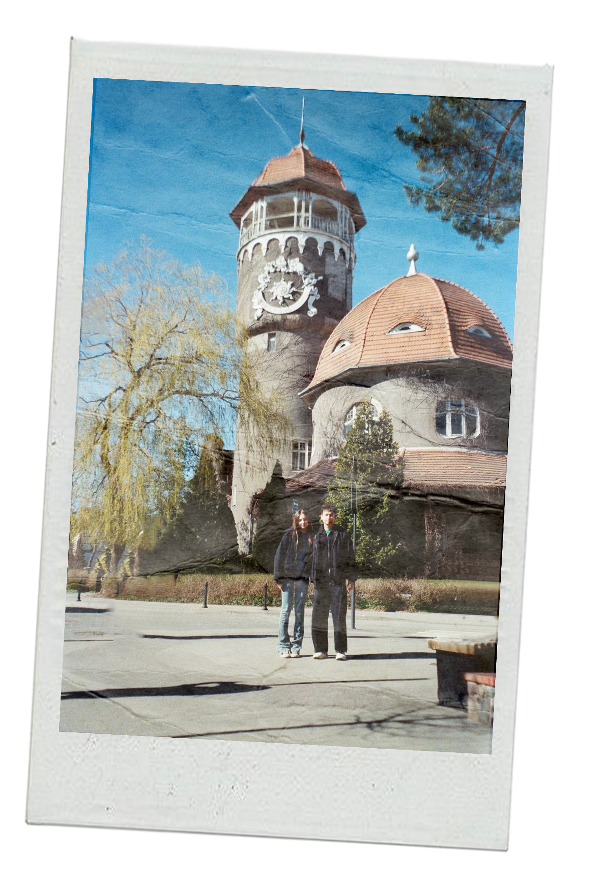
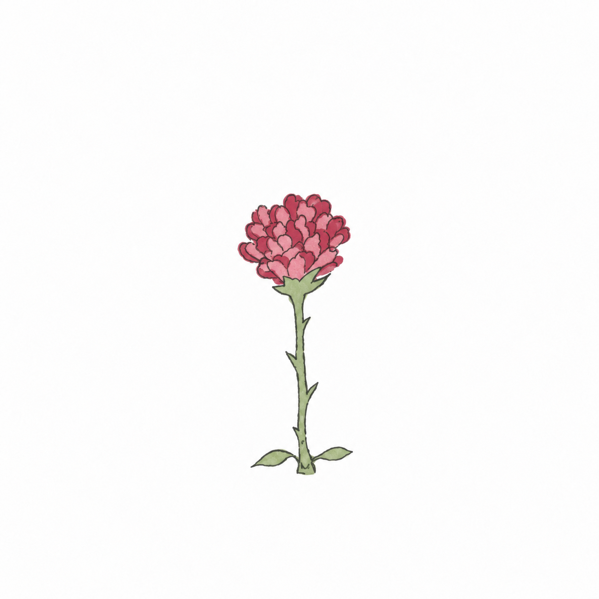

Куратор: Олег Пащенко
Моя фотография с Маленьким принцем
В мире существует миллион одинаковых вещей,
книг, домов, фотографий.
Этот лонгрид рассказывает почему вещь
становится уникальной не в момент её создания,
а когда между ней и человеком появляется связь.


Привет, меня зовут Даша, и это моя
фотография.
Что особенного в этой фотографии?
Обычный день и обычные люди,
чем она отличается от любой другой?
Я знаю, что было за пару минут до появления этой
фотографии.


Что происходило в тот день, когда те люди
оказались на месте, где была она была сделана.


Если убрать всю историю взаимодействия с этой
фотографией она потеряет свою уникальность.
Когда я задумалась об этом,
я вспомнила одну розу.
Твою.

Мою?
Для всех она была одной из тысячи,
а для меня стала единственной.
Возможно, моя фотография и его роза на самом
деле говорят об одном и том же.
Если я потеряю эту фотографию, я потеряю
кусочек собственной истории.
Учёные говорят, что..
Наши отношения с вещами начинаются рано. Идея
о том, что мы можем владеть чем-то, обладать
этим, как частью себя, усваивается детьми к двум
годам. А к шести годам у них проявляется
«эффект владения», когда они придают
дополнительную ценность предмету просто
потому, что он принадлежит или принадлежал им.
Хотя дети понимают, что такое владение, с самого
раннего возраста, они мыслят об этом проще,
чем взрослые. Исследование Ори Фридмана
и Карен Нири, проведённое в 2008 году, показало,
что в возрасте от двух до четырёх лет дети
исходят из предположения, что тот, кто первым
завладел предметом, является его владельцем,
независимо от того, отдаст он его позже или нет.
Но почему статус «моей» вещи
делает её какой-то особенной?
Потому что она моя.
Ребёнок может выбрать любую игрушку,
а через несколько дней отказаться от неё. Но пока
она принадлежит ему, она становится частью
его маленького мира.
Получается, первый шаг к уникальности
это отношение к ней.
Но обладать вещью ещё не значит
сделать её уникальной.
Когда я увидел целый
сад таких же роз, мне стало грустно.
Оказалось, что моя совсем обычная.

У нас может быть много вещей,
которые принадлежат нам, но ничего
для нас не значат.
Моя фотография была рядом
со мной в поездках, лежала у меня
в кошельке, чуть-чуть потёрлась,
но даже если физически она стала
хуже выглядеть, то эмоционально
она стала для меня только ценнее.

Маленький принц заботится о розе, он поливал её,
защищал от опасностей.

Фотографию можно восстановить или сделать
новую, но именно эта хранила уникальные
воспоминания: она пережила много путешествий
в моём кармане и дарила мне улыбку при каждом
взгляде на неё.
Когда принц увидел целый
сад таких же роз, он сказал им вот что.
Вы красивые, но пустые. Ради вас не захочется
умереть. Конечно, случайный прохожий, поглядев
на мою розу, скажет, что она точно такая же,
как вы. Но мне она одна дороже всех вас.
Ведь это её, а не вас я поливал каждый день. Её,
а не вас накрывал стеклянным колпаком.
Её загораживал ширмой, оберегая от ветра.
Для неё убивал гусениц, только двух или трёх
оставил, чтобы вывелись бабочки. Я слушал,
как она жаловалась и как хвастала,
я прислушивался к ней, даже когда она умолкала.
Нет. Она моя.
Но Маленький принц не сделал свою розу
особенной одним только словом «моя».
Слова мало. Лис объяснил мне, что роза
дорога тем, что я отдавал ей своё время.
Наверное, с моей фотографией произошло
то же самое. Она тоже не стала уникальной
в тот момент, когда была сделана. Уникальной
её сделали все моменты, которые появились
вокруг неё после. Поездки, люди, которые были
рядом, дни, в которые я доставала её из кошелька
и вспоминала то, что происходило тогда.


Мы начинаем привязываться к конкретным вещам,
появляется страх потери. Потому что вместе
с вещью мы боимся потерять часть собственной
истории.
Поэтому я так боялся за свою розу.
Другой такой у меня нет.
Но Маленький принц не сделал свою розу
особенной одним только словом «моя».
Если задуматься, мы делаем уникальными
не только вещи. То же самое происходит
с людьми. В мире миллиарды людей и мы каждый
день проходим мимо сотен лиц и почти никогда
не задумываемся о том, насколько каждый
человек неповторим.
Но появляется один человек..
Лис говорил, что я был для него одним
из ста тысяч мальчиков. Пока мы не подружились.
Ты узнаёшь его голос, запоминаешь его
привычки, у вас появляются общие места,
фотографии и разговоры.
Постепенно человек перестаёт быть
«одним из миллиардов», он становится
одним конкретным человеком в твоей
истории.


Именно поэтому история Маленького принца
никогда не была только историей о розе.
Она была историей о том, как среди тысяч
одинаковых объектов появляется один, которому
мы отдаём своё время.
Роза Маленького принца стала единственной
не потому, что была единственной в мире,
а потому, что стала единственной в его истории,
и, возможно, в этом и заключается настоящий
феномен уникальности:
мы не находим
единственное:
мы делаем
его единственным


Теперь и для вас эта фотография чем-то
отличается от остальных, вы знаете её историю.
*Иллюстрации частично взяты из «Маленького принца» Антуана де Сент-Экзюпери